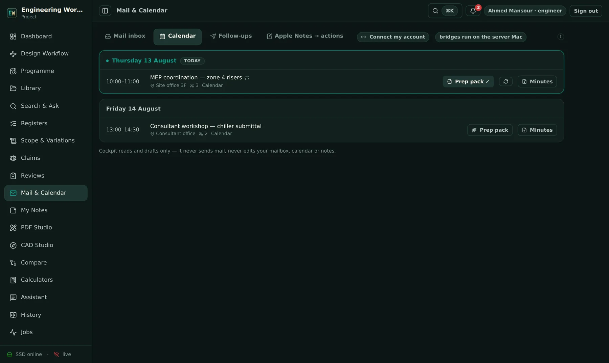
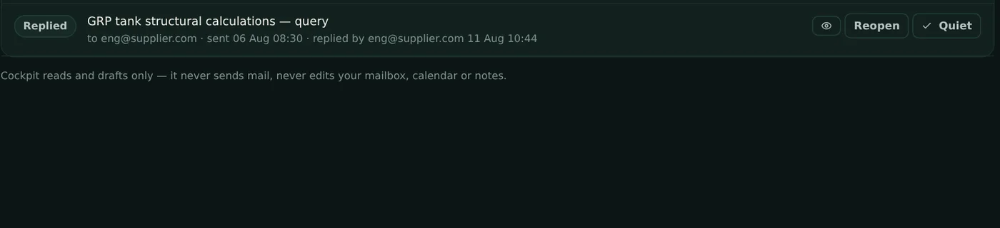

Follow-ups with a brain
Real asks are tracked automatically; meeting invitations, auto-replies and no-reply robots are filtered out. When a thread waits past its patience — counted in working days on your weekend — the bell rings and a chaser is already drafted.


Meetings arrive pre-briefed
The calendar highlights today, and any meeting can produce a prep pack: related documents, open register items on the subject, and recent correspondence — assembled deterministically, cached for the week.
Three states, zero ambiguity
Needs reminder, waiting, replied — every thread tells you its state and its clock at a glance.

The complete list.
Everything the mail brain does — and everything it deliberately never does.
Connection & privacy
Follow-ups
Calendar & meetings
Triage & reading
"The field" is the usual toolchain — the per-user construction cloud and the separate applications around it. Good tools; the difference here is one integrated record, on your own server.